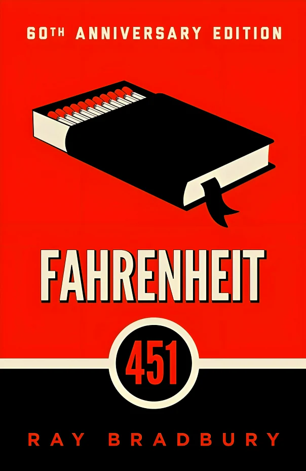
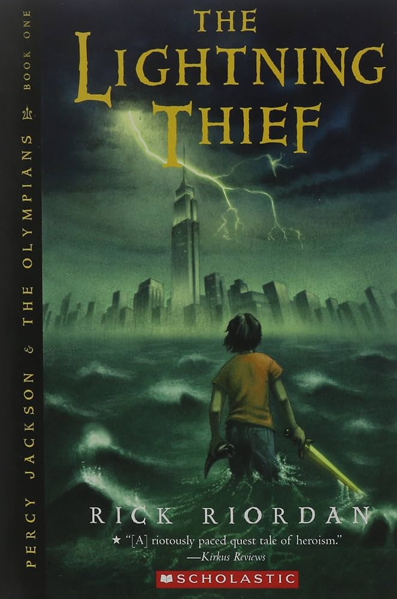
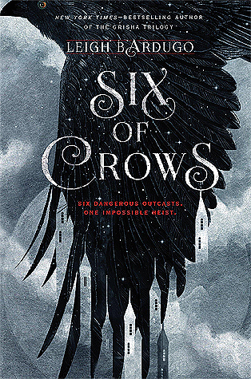
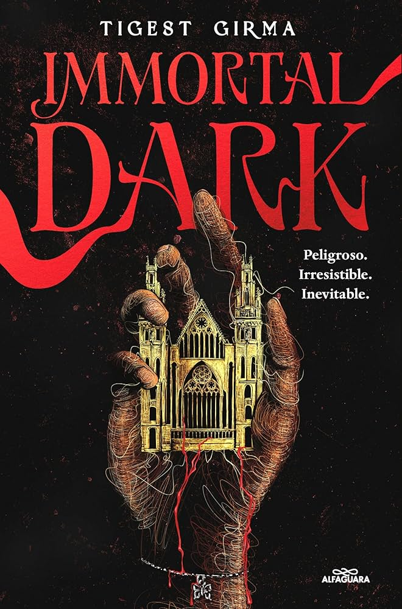
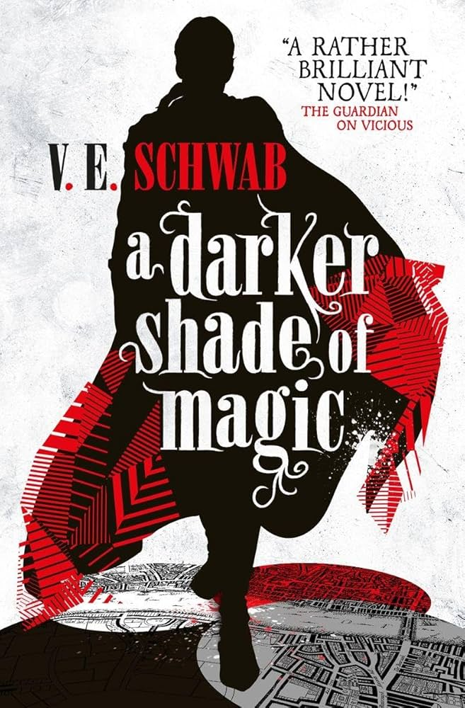
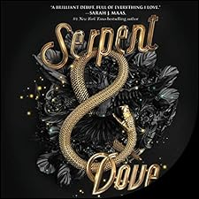

Writer: Bradbury, Ray (1920–2012)
Montag is a disciplined fireman whose job is to burn books...
Montag meets a young woman named Clarisse...
Writer:Riordan, Rick (1964-)
"What would happen if you discovered one day that you were actually the son of a Greek god and had to fulfill a secret mission? Well, that's exactly what happens to Percy Jackson, who from that moment on is about to experience the most exciting events of his life. Expelled from six schools, Percy suffers from dyslexia and difficulty concentrating—or at least that's the official version. Ridiculed for making up fantastic stories, even he doesn't quite believe them himself until the day the Olympian gods reveal the truth: Percy is none other than a demigod, that is, the son of a god and a mortal. And as such, he must discover who has stolen Zeus's lightning bolt and thus prevent a war from breaking out among the gods. To complete his mission, he will have the help of his friends Grover, a young satyr, and Annabeth, daughter of Athena."
Writer:Bardugo, Leigh (1975-)
Kaz Brekker, a criminal mastermind who runs a notorious gambling den known as the Crow Club, must assemble a team of six individuals with the skills necessary to infiltrate (and escape) the Ice Court, an impregnable fortress guarding a secret that could shatter the world's balance of power. It's unlikely anyone will survive this mission, but if Kaz wants to become richer than he can imagine, he's going to have to gamble everything on a single card. And that card is the Six of Crows.
Writer:Girma, Tigest
Kidan Adane, heiress to House Adane, has never been interested in the prestigious University of Uxlay, its vampire society, its strange houses, or its inheritances. All she cares about is finding her missing twin sister, June. But everything changes when Kidan discovers that Susenyos Sagad, a fearsome and attractive vampire whom she believes is responsible for June's disappearance, wants her inheritance.
Writer:Schwab, Victoria (1987-)
Kell es uno de los últimos magos viajeros con una extraña habilidad para trasladarse entre universos paralelos conectados por una ciudad mágica. Existe un Londres Gris, sin magia y con un rey loco: el rey George III. Un Londres Rojo, donde se honra la vida y la magia y donde Kell creció junto al heredero de un imperio esplendoroso. Un Londres Blanco, donde la lucha por controlar la magia dejó una ciudad en ruinas. Y mucho tiempo atrás, había un Londres Negro. Pero ya nadie habla de eso. Oficialmente, Kell es el viajero Rojo, embajador del imperio de Maresh y responsable de circular la correspondencia entre los nobles de cada Londres. Extraoficialmente, es un contrabandista, al servicio de quienes estén dispuestos a pagar por objetos de mundos que jamás verán. Se trata de un hobby con consecuencias mortales, que ahora sufre en primera persona. En un viaje, Kell se cruza con Delilah Bard, una ladrona con aspiraciones idealistas. Ella le roba, lo salva de un enemigo letal y finalmente lo obliga a llevarla a otro mundo en busca de aventuras. Una magia peligrosa emerge y la traición acecha en cada rincón. Para mantener a todos los mundos a salvo, tendrán primero que luchar para seguir.
Writer:Mahurin, Shelby (1992-)
Two years ago, Louise le Blanc fled her coven and took refuge in the town of Cesarine, where she renounced magic to live off what she could steal. There, they hunt witches like Lou. They fear them. And they burn them.